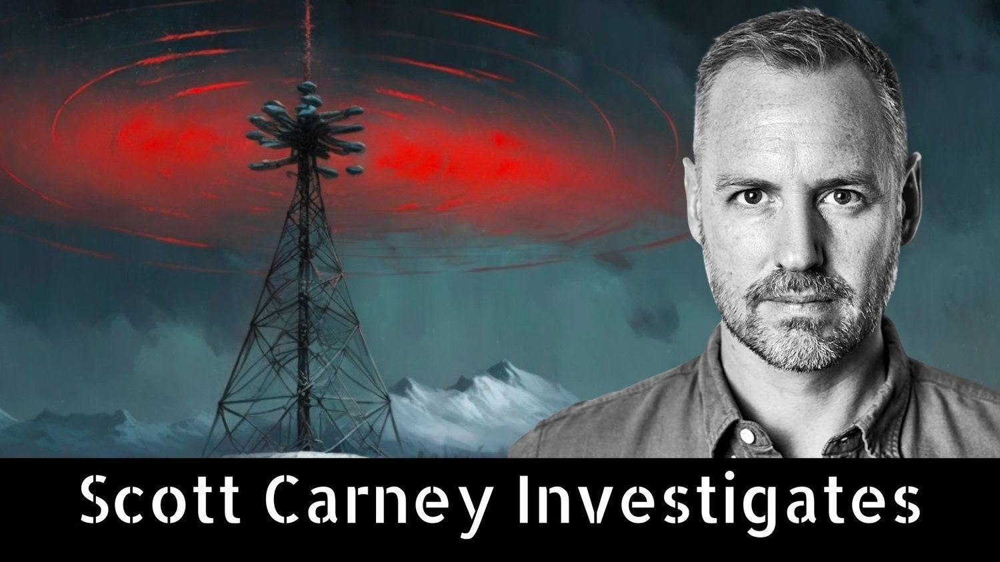

Journalism Has a New Home
Investigative journalist Scott Carney explores true crime, cult psychology, biohacking, fitness revolutions, climate change calamities, organ trafficking and whatever else seems interesting at the moment. The first episode, The Enlightenment Trap just came out this week. I don't have a publication schedule set up yet, but expect amazing exclusive content to show up there.
Last weekend I sent out an Emergency Broadcast after I realized that YouTube is not a safe place for journalism. As you are probably aware by now, after I put out a video in January about brewing problems with the Wim Hof Method, Wim Hof's son, Enahm Hof, began filing copyright complaints against my channel in order to silence my work. Enahm sent me multiple threatening letters saying that he would sue me for defamation and that he intended to file enough complaints against me to get YouTube to remove my channel.
In response, I hired Siddartha Rao at Romano Law to defend my case and have an excellent defense in place should Enahm follow through with a court filing. It is clear that what I do is protected speech under US law and I would prevail in front of an American judge or jury. Indeed, anti-SLAAP statutes indicate that Innerfire would probably end up paying my legal expenses should they move forward.
However, YouTube has been less than helpful in restoring the videos that were removed under fraudulent pretenses. Naturally, I can't continue my job as a reporter if after everything I put out requires intensive wrangling with YouTube's customer service after the launch just to keep the videos live. I did a twitter thread about how YouTube's policies have a chilling effect not only on my work, but all journalism in the public interest.
The fallout of all of this is that I've realized that I can't depend on YouTube as my rock-solid journalism partner. I'm working on a new in-depth report about the Wim Hof method that contains some pretty hard hitting truths about the practice that I've known-and-loved for the last ten years. It's not all bad. But it's not all good either. Some myths will be torn down. Since I know that Innerfire will attempt to remove my work from the internet again when it comes out rather than engage in public dialogue, I plan to release the story on as many platforms at once simultaneously. This includes finalizing a partnership with a major American news source. More importantly, That’s why I've decided to start a podcast. And I'd really like you to give a listen.
Are There Secret Wim Hof Techniques?
How much more is there to learn in the Wim Hof Method after you've mastered the breathwork and cold immersion? Is there a well of knowledge that will push your limits to untold bounds? Or is what you see what you get?
I've been writing and reporting about the Wim Hof Method for a decade, and it's given me a perspective on exactly how much more the method can offer beyond what is openly available everywhere on the internet.
This week's video (don't worry, I'll continue to publish on YouTube for as long as my channel is live there) should offer you some idea of whether or not it's worth it to pay around $4000 to pursue the course to become a Wim Hof Method instructor.